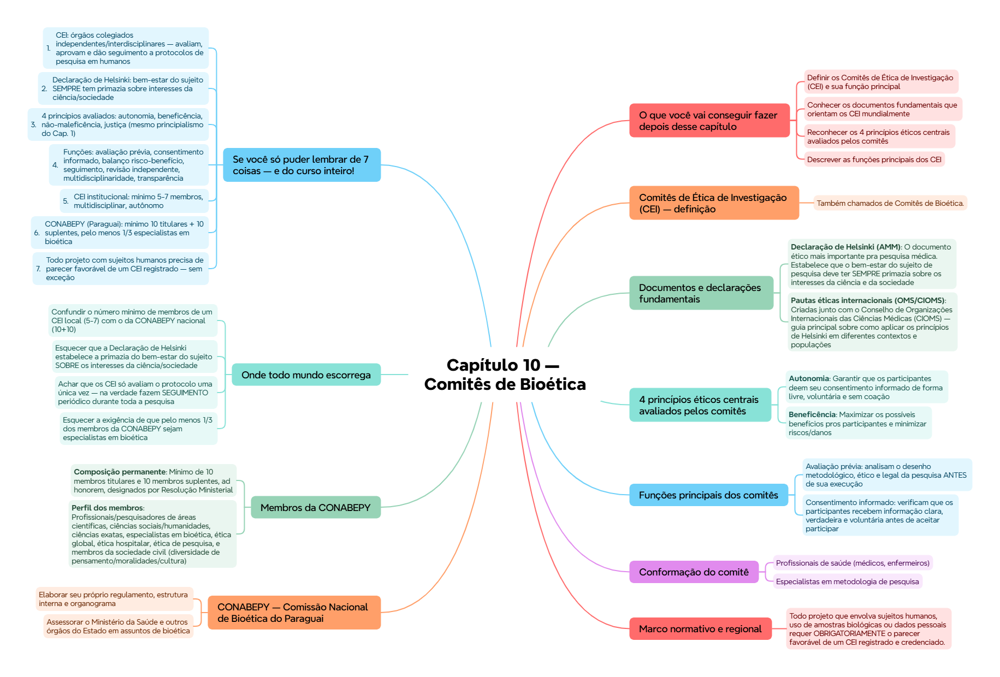

ClinicusMed · Dossiê Clinicus — Padrão de Excelência
Nv. 1
0 XP
🎯 O que você vai conseguir fazer depois desse capítulo
Definir os Comitês de Ética de Investigação (CEI) e sua função principal
Conhecer os documentos fundamentais que orientam os CEI mundialmente
Reconhecer os 4 princípios éticos centrais avaliados pelos comitês
Descrever as funções principais dos CEI
Entender a composição multidisciplinar exigida dos comitês
Conhecer a CONABEPY — a Comissão Nacional de Bioética do Paraguai
🏛️ Comitês de Ética de Investigação (CEI) — definição
🟢 Definição: órgãos colegiados, independentes e interdisciplinares. Sua função principal é avaliar, aprovar e dar seguimento aos protocolos de pesquisa em seres humanos pra garantir a proteção, os direitos, a dignidade e a segurança dos participantes.
Também chamados de Comitês de Bioética. A nível mundial, as diretrizes pros CEI são marcadas por princípios éticos universais — a OMS e a Associação Médica Mundial (AMM) são as principais entidades que estabelecem esses padrões orientadores.
📜 Documentos e declarações fundamentais
Documento
Conteúdo
Declaração de Helsinki (AMM)
O documento ético mais importante pra pesquisa médica. Estabelece que o bem-estar do sujeito de pesquisa deve ter SEMPRE primazia sobre os interesses da ciência e da sociedade
Pautas éticas internacionais (OMS/CIOMS)
Criadas junto com o Conselho de Organizações Internacionais das Ciências Médicas (CIOMS) — guia principal sobre como aplicar os princípios de Helsinki em diferentes contextos e populações
📌 A frase mais cobrada dessa seção: "o bem-estar do sujeito de pesquisa deve SEMPRE ter primazia sobre os interesses da ciência e da sociedade" — o princípio central da Declaração de Helsinki.
⚖️ 4 princípios éticos centrais avaliados pelos comitês
Princípio
Aplicação nos CEI
Autonomia
Garantir que os participantes deem seu consentimento informado de forma livre, voluntária e sem coação
Beneficência
Maximizar os possíveis benefícios pros participantes e minimizar riscos/danos
Não-maleficência
Obrigação de não causar dano intencional aos sujeitos do estudo
Justiça
Assegurar que benefícios e cargas da pesquisa sejam distribuídos equitativamente, sem explorar populações vulneráveis
💡 São os mesmos 4 princípios do principialismo (Informe Belmont, Cap. 1) — aplicados especificamente ao contexto de avaliação de protocolos de pesquisa.
🔍 Funções principais dos comitês
Avaliação prévia: analisam o desenho metodológico, ético e legal da pesquisa ANTES de sua execução
Consentimento informado: verificam que os participantes recebem informação clara, verdadeira e voluntária antes de aceitar participar
Balanço risco-benefício: asseguram que os riscos previsíveis sejam mínimos comparados aos benefícios esperados
Seguimento: monitoram o desenvolvimento da pesquisa pra garantir que os protocolos de boas práticas clínicas continuem sendo cumpridos
Revisão independente: avaliam os protocolos antes do início do estudo E fazem seguimento periódico
Competência multidisciplinar: devem incluir profissionais de saúde, cientistas, bioeticistas e membros leigos (representantes da comunidade)
Transparência: operam sob procedimentos operativos padronizados (POE) que asseguram decisões justas e documentadas
👥 Conformação do comitê
🟢 Composição mínima: pra garantir julgamento imparcial, os comitês devem ser multidisciplinares e AUTÔNOMOS em relação aos pesquisadores e patrocinadores. Costumam ter no mínimo 5 a 7 membros.
Perfis incluídos:
Profissionais de saúde (médicos, enfermeiros)
Especialistas em metodologia de pesquisa
Especialistas em bioética/ética
Profissionais do âmbito jurídico/legal
Representantes da sociedade civil ou usuários de serviços de saúde
📋 Marco normativo e regional
Todo projeto que envolva sujeitos humanos, uso de amostras biológicas ou dados pessoais requer OBRIGATORIAMENTE o parecer favorável de um CEI registrado e credenciado.
Nível nacional: comitês operam sob diretrizes das Comissões Nacionais de Bioética (como a CONABEPY no Paraguai) e tratados internacionais (Declaração de Helsinki).
🇵🇾 CONABEPY — Comissão Nacional de Bioética do Paraguai
🟢 Propósito: identificar, formular, articular, analisar e resolver eventuais problemas relacionados a pesquisas/intervenções sobre a vida, a saúde, o meio ambiente, políticas de bioética, e o registro/assessoramento aos comitês da área — protegendo a vida do ser humano, sua dignidade, identidade, integridade e liberdades fundamentais.
Principais funções (destaque de algumas):
Elaborar seu próprio regulamento, estrutura interna e organograma
Assessorar o Ministério da Saúde e outros órgãos do Estado em assuntos de bioética
Zelar pelo respeito à dignidade humana, igualdade de direitos, trato justo/equitativo pra participantes de pesquisas
Elaborar informes, relatorias e recomendações sobre conflitos éticos na área da vida/biomedicina/biotecnologia
Promover educação em bioética
Manter registro de todos os comitês da área que funcionam no país
Dar formação e seguimento aos diferentes comitês da área
👤 Membros da CONABEPY
Aspecto
Detalhe
Composição permanente
Mínimo de 10 membros titulares e 10 membros suplentes, ad honorem, designados por Resolução Ministerial
Perfil dos membros
Profissionais/pesquisadores de áreas científicas, ciências sociais/humanidades, ciências exatas, especialistas em bioética, ética global, ética hospitalar, ética de pesquisa, e membros da sociedade civil (diversidade de pensamento/moralidades/cultura)
Garantia mínima
Pelo menos 1/3 dos membros devem ser especialistas em bioética — pra abordar interdisciplinarmente os problemas da práxis médica e pesquisas biomédicas
📌 Números-chave pra decorar: mínimo 10 titulares + 10 suplentes (CONABEPY) x mínimo 5-7 membros (CEI locais/institucionais) x pelo menos 1/3 especialistas em bioética.
✅ O que você deve lembrar
CEI = 5-7 membros mínimo, multidisciplinar, autônomo. 4 princípios avaliados: autonomia, beneficência, não-maleficência, justiça. CONABEPY = mínimo 10 titulares + 10 suplentes, 1/3 especialistas em bioética.
⚠️ Erro comum
Confundir o número mínimo de membros de um CEI institucional (5-7) com o da CONABEPY nacional (10 titulares + 10 suplentes) — são níveis diferentes (local/institucional x nacional).
⚡ Questão rápida
Por que os CEI precisam incluir membros "leigos" (representantes da comunidade), além de profissionais técnicos?
Porque a avaliação ética de um protocolo de pesquisa não deve se basear apenas em critérios técnicos/científicos — precisa também refletir a perspectiva e os valores da comunidade que pode ser afetada pela pesquisa. Membros leigos trazem uma visão externa ao meio acadêmico/científico, ajudando a garantir que decisões não sejam tomadas exclusivamente por especialistas com possível viés profissional ou institucional, e que a proteção dos direitos e da dignidade dos participantes (a razão de ser do comitê) seja avaliada também da perspectiva de quem não está imerso na cultura da pesquisa científica.
🧠 Autoexplicação
Por que faz sentido que os CEI precisem ser AUTÔNOMOS em relação aos pesquisadores e patrocinadores da pesquisa que estão avaliando?
A função central do CEI é proteger os direitos, a dignidade e a segurança dos participantes da pesquisa — e essa proteção só é genuína se a avaliação for verdadeiramente imparcial. Se os membros do comitê tivessem vínculos diretos (financeiros, profissionais, hierárquicos) com os pesquisadores ou patrocinadores do estudo que estão avaliando, haveria um conflito de interesse real: a pressão para aprovar o protocolo (por lealdade profissional, interesse financeiro, ou pressão institucional) poderia comprometer a análise crítica e rigorosa necessária. Isso conecta diretamente com o conceito de 'avaliação independente' já visto no Cap. 8 sobre ensaios clínicos, e também com as discussões sobre conflito de interesse no Cap. 9 sobre má conduta científica — a autonomia do comitê é o que garante que a avaliação prioriza genuinamente o bem-estar dos participantes, e não os interesses de quem está conduzindo ou financiando a pesquisa.
⚠️ Onde todo mundo escorrega
Confundir o número mínimo de membros de um CEI local (5-7) com o da CONABEPY nacional (10+10)
Esquecer que a Declaração de Helsinki estabelece a primazia do bem-estar do sujeito SOBRE os interesses da ciência/sociedade
Achar que os CEI só avaliam o protocolo uma única vez — na verdade fazem SEGUIMENTO periódico durante toda a pesquisa
Esquecer a exigência de que pelo menos 1/3 dos membros da CONABEPY sejam especialistas em bioética
Confundir as pautas do CIOMS (aplicação prática de Helsinki em diferentes contextos) com a própria Declaração de Helsinki (documento ético central)
📚 Se você só puder lembrar de 7 coisas — e do curso inteiro!
CEI: órgãos colegiados independentes/interdisciplinares — avaliam, aprovam e dão seguimento a protocolos de pesquisa em humanos
Declaração de Helsinki: bem-estar do sujeito SEMPRE tem primazia sobre interesses da ciência/sociedade
CEI institucional: mínimo 5-7 membros, multidisciplinar, autônomo
CONABEPY (Paraguai): mínimo 10 titulares + 10 suplentes, pelo menos 1/3 especialistas em bioética
Todo projeto com sujeitos humanos precisa de parecer favorável de um CEI registrado — sem exceção
🏥 Esse é o último capítulo de Bioética! Ao longo do curso, você percorreu desde os fundamentos filosóficos (Cap. 1-2), passando pela relação médico-paciente (Cap. 3, 7), os dilemas do início e fim da vida (Cap. 4-5), a responsabilidade médica (Cap. 6), até a ética na pesquisa científica (Cap. 8-10). Parabéns por completar essa jornada!
🩺 Caso Clínico Progressivo — Aprovação de um Novo Protocolo de Pesquisa
Vamos acompanhar a Dra. Beatriz, pesquisadora, submetendo um novo protocolo de estudo com pacientes vulneráveis ao Comitê de Ética. O caso evolui em 3 níveis — clica em cada um pra ver como as coisas vão se desenrolando.
🧠 Mapa Mental — Comitês de Bioética
Visão geral do capítulo em formato visual — ideal pra revisão rápida antes da prova. O conteúdo completo, com explicações e exemplos, está no Guia de Estudo.

🃏 Flashcards — SM-2 real + interface Anki
O sistema guarda, no seu navegador, quais cards você já sabe bem e quais precisam voltar mais cedo — cada vez que você avalia um card, ele recalcula quando ele deve voltar.
Cartão 1 / 0Dominados: 0
PERGUNTA
RESPOSTA
✅ Banco de Questões Comentadas
10 questões, do mais básico ao mais puxado. Escolhe uma alternativa, depois clica em "Ver comentário completo" — vale a pena ler até quando você acerta, porque o comentário explica cada alternativa, não só a certa.